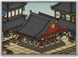

Requires
- Buildings: 
- Arts:

- Resources:

Basic Building Statistics (can be modified by difficulty level, arts, skills, traits and retainers)
- Cost: 8000
- +2000 to wealth from commerce in this province
- +35 per turn to town growth from commerce within this province
- +2 rank(s) for metsuke recruited in this province
- Consumes food: 2
- Enables recruitment of Rank 1 metsuke
Clan Effects
- Each market chain building enables you to sustain one additional metsuke (to a maximum of 5)
If you are first to construct
- +5% to the success chance of metsuke actions
Description
To price everything is to value nothing.
This is a merchants' association or mutual trading company, where the powerful manage trade both for themselves and others. The kabunakama even controls the trade activities of smaller merchants' guilds, can set prices on goods, and can even bar dishonest or immoral merchants from trade altogether. The kabunakama does not exist to promote competition among merchants, but cooperation and, as a result, it boosts a province's wealth and growth enormously and also improves the quality of metsuke who are recruited as agents. Historically, kabunakama had much in common with the merchant adventurers and great trading companies of Europe. Often, they were granted trade rights in a town or over a particular commodity, but were then expected to pay substantial taxes to the Shogun or daimyo for the privilege. Selling monopoly rights was something that all ruling classes did, as it was profitable and did not involve nobles in any of the sordid money-grubbing of common trade. Merchants did not, however, trade overseas with foreigners, except in very carefully controlled ways. Despite their enormous wealth, the merchants of the kabunakama did not improve their social status: as trading townsmen they were still far lower in the social pecking order than honest, hardworking peasant folk.